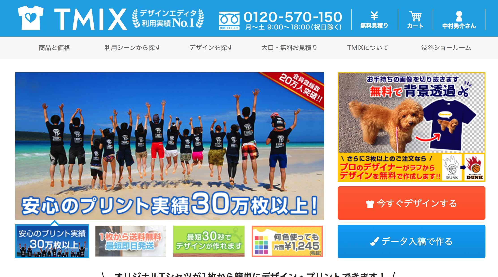
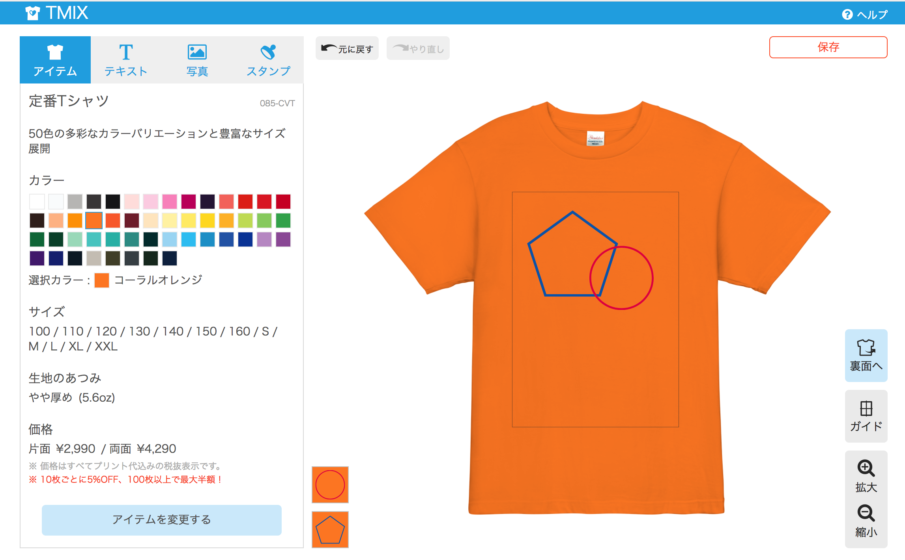

福井高専OB訪問
2017-10-06
福井高専 4EI教室
うなすけ
誰
- 名前: うなすけ(中村 勇介)
- 福井高専 電子情報工学科
46期生(23歳) - twitter : @yu_suke1994
- GitHub : @unasuke
- fb : yusuke.nakamura1994
所属
- 株式会社spice life
(2015.04〜) - 開発部
プログラマ- インフラリードエンジニア
- ■■■■■■■
TMIXについて
tmix.jpオリジナルTシャツを購入できるB2CのECサイト
TMIXについて
tmix.jpデザインから購入までブラウザ上で完結
TMIXについて
使用技術
- Ruby (Ruby on Rails)
- Scss
- JavaScript (React)
- Docker
- AWS (EC2, S3...)
- etc...
会社紹介終わり
事前にもらった質問に答えつつ
学生時代の話をします
1〜3年生
順調に成績が落ちていく
高専祭実行委員とかしてた気がする
4年生 インターンシップ
■■■■■■■■■■■■■■■■
Objective-Cを用いたiOS アプリの作成
インターンシップ成果報告プレゼン from うなすけ
4年生 インターンシップ
この時はインターン先が近い友人に
家から車で送ってもらっていました
インターンに関する質問はだいたいこれで答えられたはず
5年生 就活
※ 就活そのものは4年生の3月から開始
進級できるかどうかヒヤヒヤしてた5年生 就活
面接練習について
担任の先生との面接練習
- 志望理由
- 自己紹介
- 自分の長所
くらいはスラスラ言えるように
あとはとにかく落ち着くこと
5年生 就活
落ちまくる
6/16時点で3応募、3お祈り
5年生 就活
就職先の希望
- 首都圏であること
- 業務内容がプログラミングであること
なので学校に来てる求人は少なかった
5年生 就活
学校に来ている求人が少ない
↓
自分から見つけるしかない！
Wantedly経由でいくつかの企業に訪問
5年生 就活
6/23
spice life 内定
(高専カンファレンス経由)
仕事編
仕事
どのような業務をしているのか
- プログラミング
- 主にRubyを書いている
仕事
スケジュール
フレックス制度なので日によってまちまち
午前中に出社していることは少ない
オフィスだけで仕事をしている訳でもない仕事
スケジュール(1)
とある1日
- 13時 出社
- 22時 退社
仕事
スケジュール(2)
昨日
- 14時 コメダ珈琲で作業開始
- 19時 帰宅してごはん食べて再開
- 21時 終業
僕の話ばかりでもつまらないので
みんなが聞きたそうな話をします
1. ベンチャーに就職するために
2. 就職した後やっていくために
ベンチャーに就職するために
ベンチャーとは
「ベンチャー企業」の略
e.g. pixiv, cookpad, moneyfoward...
ベンチャーに就職するために
やっておきたいこと
- 何かつくってみる
- それを公開する
ベンチャーに就職するために
何かつくってみる
何でもいいので「手を動かした実績」を作ること
- iOS app
- android app
- Web app
- ライブラリ
- etc...
ベンチャーに就職するために
それを公開する
公開するために、gitとGitHubを使う
⬆️
業界のスタンダード
ベンチャーに就職するために
なぜそんなことをするのか
高専生は即戦力になれるか否かが重要
ベンチャーに就職するために
でも作りたいものなんてない……
Ruby on Rails チュートリアルをやりましょう
https://railstutorial.jp/就職した後やっていくために
やっていく ← とは？
- 給料もっと欲しい
- もっと大きな仕事を任されたい
- とにかく戦力として評価されたい
そのためにどう行動するのが良いのか？
就職した後やっていくために
- 情報収集する
- 手を動かして情報発信する
- コミュニティに属する
就職した後やっていくために
情報収集する
すぐに状況が変わっていく業界
はてなブックマークなどを使う
要は勉強ですね就職した後やっていくために
手を動かして情報発信する
最新のツールやテクノロジーを試してみて、
どう感じたか、業務に生かせそうか発信
ブログでもなんでも……
就職した後やっていくために
コミュニティに属する
わからない部分を教えてもらったり
より良い条件の会社をオススメしてもらえたり(！)
就職した後やっていくために
- 情報収集する
- 手を動かして情報発信する
- コミュニティに属する
義務感とか、焦りでこういうことをしている？
就職した後やっていくために
- 情報収集する
- 最新情報は面白い
- 手を動かして情報発信する
- ものづくりは楽しい
- コミュニティに属する
- みんなでワイワイ楽しい
楽しいからやっている
就職した後やっていくために
楽しくない、そんなのやりたくない
業務時間だけ技術のことを考える
それでも生活はできる
戦力としては厳しいかも……
ベンチャーに就職するために
- 何かつくってみる
- それを公開する
就職した後やっていくために
- 情報収集する
- 手を動かして情報発信する
- コミュニティに属する